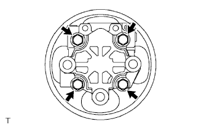
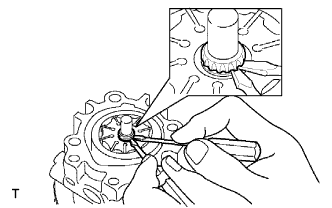
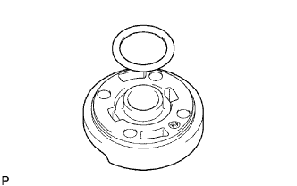
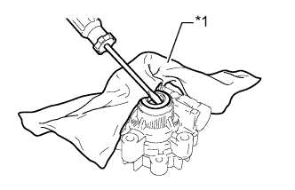

ЛОПАСТНОЙ НАСОС (для моделей с 2TR-FE) > РАЗБОРКА |
| 1. СНИМИТЕ МАСЛЯНЫЙ БАЧОК ЛОПАСТНОГО НАСОСА В СБОРЕ |
Выверните 3 болта и снимите масляный бачок с переднего кожуха лопастного насоса.
С помощью отвертки снимите кольцевое уплотнение с масляного бачка.
| 2. ЗАКРЕПИТЕ ЛОПАСТНОЙ НАСОС В СБОРЕ |
 |
С помощью SST закрепите лопастной насос в тисках между алюминиевыми пластинами, как показано на рисунке.
| 3. СНИМИТЕ ЗАДНИЙ КОЖУХ ЛОПАСТНОГО НАСОСА |
|  |
Выверните 4 болта и снимите задний кожух с переднего кожуха лопастного насоса.
Снимите кольцевое уплотнение с заднего кожуха лопастного насоса.
| 4. СНИМИТЕ ВАЛ СО ШКИВОМ |
|  |
С помощью отвертки снимите пружинное стопорное кольцо вала с вала со шкивом.
Снимите вал со шкивом с заднего кожуха лопастного насоса.
| 5. СНИМИТЕ РОТОР ЛОПАСТНОГО НАСОСА |
Снимите ротор лопастного насоса и 10 пластин лопастного насоса с переднего кожуха лопастного насоса.
| 6. СНИМИТЕ СТОПОРНОЕ КОЛЬЦО ЛОПАСТНОГО НАСОСА |
| 7. СНИМИТЕ ПЕРЕДНЮЮ БОКОВУЮ ЗАЩИТНУЮ ШАЙБУ ЛОПАСТНОГО НАСОСА |
Снимите переднюю боковую защитную шайбу с переднего кожуха лопастного насоса.
|  |
Снимите кольцевое уплотнение № 1 с боковой защитной шайбы.
 |
Снимите кольцевое уплотнение № 2 с переднего кожуха лопастного насоса.
| 8. СНИМИТЕ САЛЬНИК КОЖУХА ЛОПАСТНОГО НАСОСА |
|  |
Извлеките сальник с помощью отвертки и куска ветоши.
| *1 | Ткань |